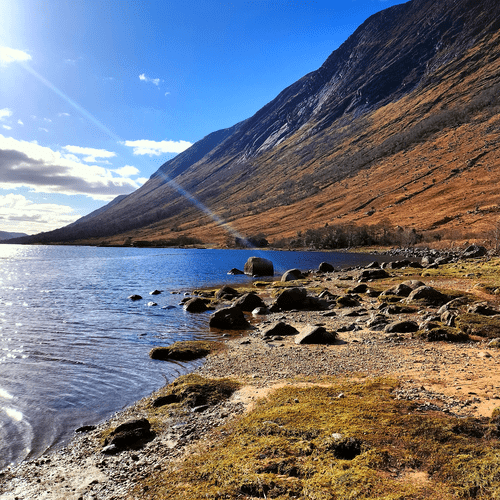
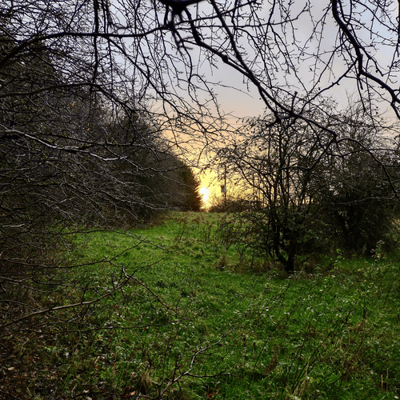
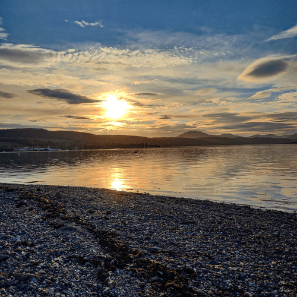
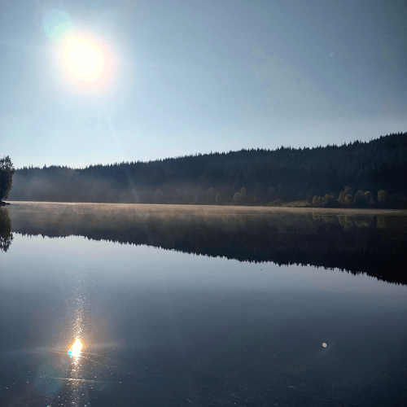
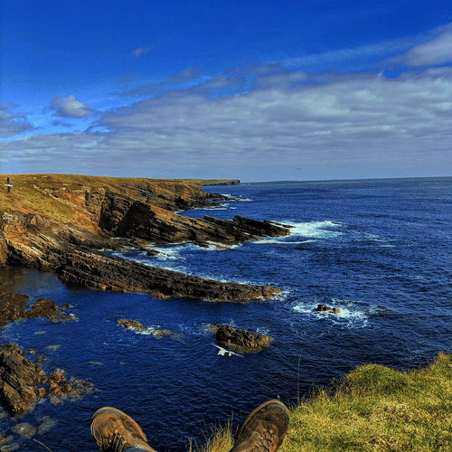
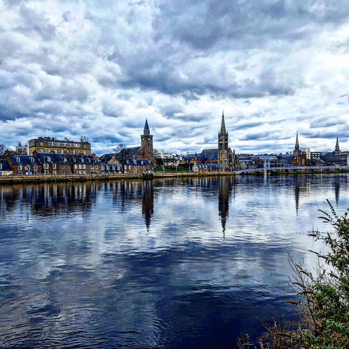
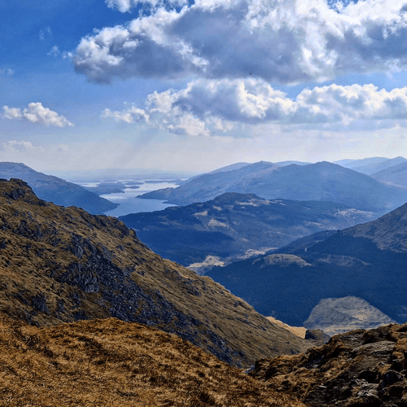
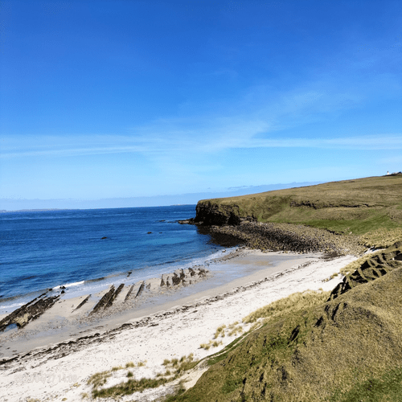
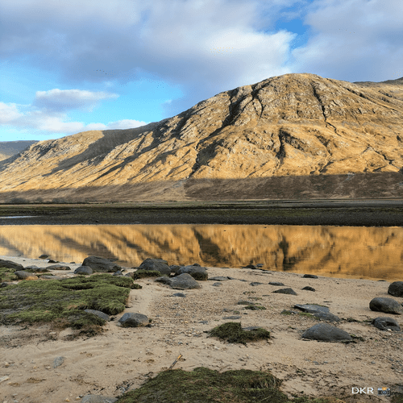
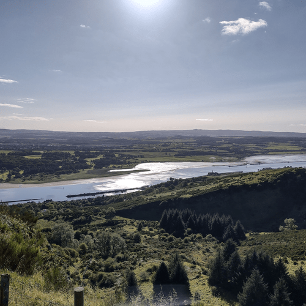

Glen Etive

Picture this: a magical place called Glen Etive (Scottish Gaelic:
Gleann Èite), nestled in the stunning Highlands of Scotland. It's home
to the mighty River Etive (Scottish Gaelic: Abhainn Èite), which
begins its journey on the peaks surrounding Rannoch Moor. Along the
way, it's joined by a wild bunch of tributary streams, like a group of
rowdy friends crashing a party at the Kings House Hotel. From there,
the Etive embarks on an epic 18 km journey, braving rapids and
obstacles like a boss, until it finally reaches its ultimate goal: the
sea loch, Loch Etive. It's no wonder that this river and its
tributaries are a hit with whitewater kayakers. In fact, at high water
levels, it's like an extreme sports playground, a true test of one's
skills and a classic run. So, if you're up for an adventure, grab your
paddle and join the party!
Mugdock Park

Listen up, folks! Get ready to explore the wondrous Mugdock Country
Park - a park so cool, it's partly in East Dunbartonshire and partly
in Stirling, in the former county of Stirlingshire, Scotland. You'll
find it just a hop, skip, and a jump away from Glasgow - only 10 miles
(16 kilometres) north to be exact! And if you're wondering how to get
there, fear not! It's as easy as pie, located right next to Milngavie,
which is like the VIP entrance to this awesome park. With a whopping
260 hectares (642 acres) of land to explore, you'll be like a kid in a
candy store, except the candy is trees, rivers, and history. So come
on down and enjoy the wonders of Mugdock Country Park - it's the
perfect place for a wild adventure or a chill picnic. Your move,
nature!
Roseneath Beach

Psst, hey you! Yes, you - the one dreaming of the ultimate Scottish
caravan holiday. Look no further than Rosneath Castle Park, my friend!
With a jaw-dropping location right by the banks of an idyllic loch,
it's the kind of place that will make your heart skip a beat. And
after a long day of exploring this gorgeous region, what could be
better than kicking back and relaxing at our very own Castle Isle Bar
& Restaurant? We've got delicious food that will make your taste buds
dance with joy. But wait, there's more! In peak periods, we've got
top-notch entertainment that will knock your socks off. From music to
comedy to magic shows, we've got it all. So don't wait another minute
- come to Rosneath Castle Park and let the good times roll!
Loch Drunkie

Hear ye, hear ye! Gather 'round, folks - I've got some Scottish scoop
for ya. You know what they say: good things come in small packages.
Well, that couldn't be truer when it comes to Loch Drunkie (Scottish
Gaelic: Loch Drongaidh. This wee freshwater loch is tucked away in the
picturesque Trossachs, near the charming town of Aberfoyle in the
Stirling council area of bonnie Scotland. Don't let its small size
fool you - it's a hidden gem that's waiting to be discovered. So, if
you're up for a wee adventure and want to see some of Scotland's
finest scenery, head on over to Loch Drunkie. Trust me, you won't
regret it - and who knows, you might even spot Nessie's Scottish
cousin while you're there!
East Coast Scotland

Well, well, well, look what we have here - The John O’ Groats Trail!
This 147 mile coastal walking route is the stuff of legends,
stretching all the way from Inverness to John o’ Groats. You'll be
walking along some of the most stunning shorelines, cliff tops, back
lanes and footpaths of the Scottish Highlands - it's like a nature
lover's paradise! But let me warn ya, it's not all sunshine and
rainbows. Some parts of the route are still a work in progress, with
remote, pathless and challenging terrain. But hey, no one said
adventure was easy, right? And if you're not up for the long haul, no
worries! The walk is meant to be enjoyed by both long-distance walkers
and local walkers alike. So whether you're walking from Land’s End or
just looking for a scenic coastal stroll, The John O’ Groats Trail is
waiting for you. So what are you waiting for? Let's get walkin',
laddies and lassies!
Inverness

Ah, Inverness - the city with a name that's hard to say but easy to
love!, for those of you who were wondering.) This wee city in the
Scottish Highlands is more than just a pretty face, though. It's the
administrative centre for The Highland Council and is known as the
capital of the Highlands. And let me tell ya, this place has seen its
fair share of battles. From the 11th-century battle of Blàr nam Fèinne
against Norway to the infamous Battle of Culloden, which took place on
Culloden Moor in the 18th century - Inverness has got some serious
fight in it! But don't worry, laddies and lassies, the only battle
you'll be facing in Inverness is trying to decide which whisky to
order at the local pub. (And if you can't decide, just order them all
and call it a "whisky tasting.") So, next time you're in the Scottish
Highlands, swing by Inverness and raise a glass to the city that's as
tough as it is charming. Slàinte mhath! (That's Scottish for
"Cheers!")
Ben Vorlich

Ye ken, Ben Vorlich is like a bonnie giant keepin' watch over the
Arrochar Alps of Argyll in the Southern Highlands of Scotland. This
big lad stands tall at 943 metres (that's 3,094 feet for ye
non-Scots), makin' it a Munro - and a bonnie one at that! It sits
right between the breathtaking Loch Lomond and Loch Sloy. And let me
tell ye, the views from the top are as grand as a ceilidh on Hogmanay!
But don't let Ben Vorlich's impressive height fool ye - the A82 road
and the West Highland railway line run right along its eastern side,
keepin' the mountain company as it overlooks the beautiful Loch
Lomond. It's like a wee parade for the mountain, with cars and trains
goin' by, sayin' "Hello, Ben Vorlich! You're lookin' bonnie today!" So
if ye want to experience the beauty and majesty of the Scottish
Highlands, take a hike up Ben Vorlich and give a wee wave to the
passing cars and trains. And who knows, maybe ye'll even see a kilted
hiker or two!
Whaligoe Steps

Ah, Whaligoe, a wee port with a big history! Thomas Telford himself
thought it was a "terrible spot", but Captain David Brodie had other
ideas. He said "I'll take it from here, lads!" and spent a mere £8 to
cut the now famous 330 steps. And what do you know, the harbour ended
up supporting 14 herring boats! That just goes to show, never judge a
port by its cover.
Another Glen Etive

Ah, have ye heard of Glen Etive? Aye, it's a bonnie glen nestled in
the heart o' the Scottish Highlands. The River Etive, or Abhainn Èite
as we say in Gaelic, runs through it, and it's a popular spot for
whitewater kayaking. But that's not all, there's much to explore here!
Take a wee drive down the narrow road from Kings House Hotel and
you'll find yourself surrounded by stunning scenery, with houses and
farms dotting the landscape. And if you're feeling adventurous, you
can continue along the rough tracks that hug the shores of the loch.
Trust me, you won't be disappointed!
Kilpatrick Hills

Ahoy there! The Kilpatrick Hills, aye they're a bonnie wee range o'
hills in central Scotland, stretching frae Dumbarton tae Strathblane.
Ye can find them just north o' the bonnie Loch Lomond an' the
Trossachs National Park. Tae the east, they're divided by Strathblane
frae the Campsie Fells. And let's nae forget, they're surrounded by
some bonnie wee settlements like Balloch, Clydebank, and Milngavie.
But dinnae worry, ye dinnae need tae be a hiker tae enjoy the views,
ye can just sit back and enjoy the stunning vistas o'er a wee dram.